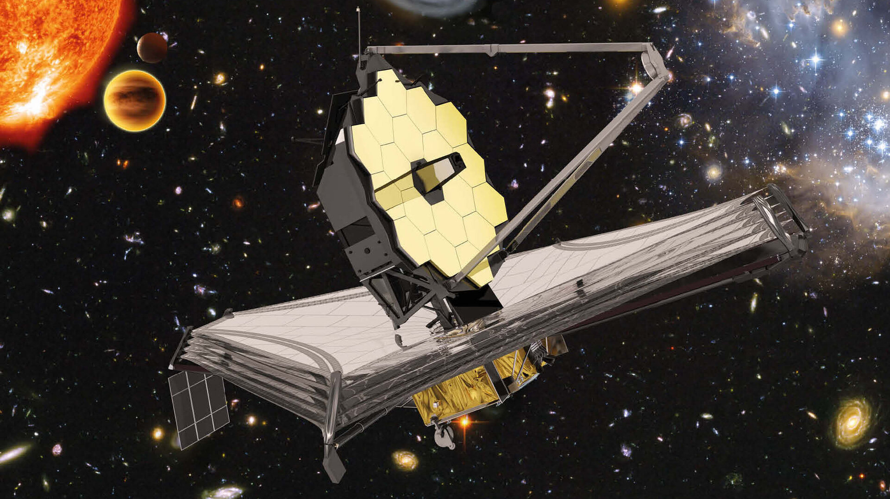

James Webb Space Telescope Discoveries: Implications for Early Universe and Extraterrestrial Life
Discovering heavy elements in the early universe
The James Webb Space Telescope (JWST) recently discovered higher-than-expected heavy element content in the early universe after the Big Bang. Most notably, oxygen was found in the early universe just 300 million years after the Big Bang, suggesting that the chemical maturation of galaxies occurred much faster than previously thought. It’s such an important discovery that scientists say it’s like “discovering the adolescent, not the baby, of the universe.”
The James Webb Space Telescope has also discovered six massive galaxies, some as much as 100 billion times the mass of the Sun, between 500 million and 800 million years after the Big Bang, a discovery that is thought to pose a challenge to traditional Big Bang cosmology.
Relevance to the Fermi paradox
These findings are important in the context of the Fermi paradox. The Fermi paradox poses the question, “If there is a high probability of intelligent life in the universe, why have we not yet made contact with it?” The discovery of heavy elements in the early universe suggests that the heavy elements necessary for life to arise may have formed much earlier than we thought.
Observations from the James Webb Space Telescope show that “ideas about the heavy element content at the beginning of the Big Bang, which are the basis for the hypothesis that we may have been the first civilization in the universe, are completely wrong.” Given that heavy elements are essential for life to arise, this raises the possibility that life elsewhere in the universe may have arisen much earlier than on Earth.
Reassessing the possibility of extraterrestrial civilizations
The James Webb Space Telescope has also found “surprising galaxies with very few heavy elements,” suggesting that life could have arisen through different evolutionary pathways in different environments. This is considered an important discovery that “drastically lowers the likelihood that we are the first civilization in the universe.”
Recent findings show that the temporal range over which life could have arisen in the universe could be much wider than previously thought. A team of astronomers in Europe has proposed the possibility that “the formation of the first stars and galaxies in the early universe may have occurred sooner than previously thought.” This raises the possibility that alien civilizations may have developed millions or even billions of years ahead of Earth.
The discovery that heavy elements such as oxygen formed rapidly in space suggests that the chemical conditions necessary for life to arise were likely present from the earliest days of the universe’s history. This means that life has had plenty of time to arise and evolve around stars that are much older than Earth, greatly reducing the likelihood that humanity is the only intelligent life in the universe.
The ‘Universe Breaker’ and the challenge to conventional cosmology
The team led by astronomer Professor Ivo Labbe of the University of Technology Swinburne in Australia informally calls the massive galaxies discovered by the James Webb Space Telescope ‘universe breakers’. The researchers say the discovery “contradicts 99% of current cosmological models” and raises the need to either change current models or fundamentally rethink our understanding of galaxy formation.
According to conventional cosmology, only small baby galaxies should have existed at around 500-800 million years after the Big Bang, so the existence of massive galaxies at the scale of the Milky Way is inexplicable. To form, these galaxies would have required the continuous formation of hundreds of new stars every year, and theoretical predictions suggest that nearly all the gas in the universe would have had to be converted into stars at an efficiency close to 100%.
Detailed observations of early galaxies
The James Webb Telescope found that, contrary to expectations, about half of the galaxies in the early universe were disk-shaped like our Milky Way. Astronomers had expected the early universe’s galaxies to be mostly small, shapeless clumps, but the observations showed otherwise, exacerbating the “lumpiness problem” of Big Bang cosmology.
Telescopes have also confirmed that some distant galaxies are almost devoid of heavy elements; two of the galaxies examined by one team were about 29.4 billion light-years from Earth, and a third was about 30.2 billion light-years away. The metals (elements heavier than helium) in these galaxies were very low, and the James Webb Space Telescope found evidence for these extremely metal-poor galaxies right from the first observations.
The JADES-GS-z14-0 galaxy and the significance of the oxygen discovery
Most recently, oxygen was discovered in a galaxy called JADES-GS-z14-0, which is 13.4 billion light-years away, making it the farthest galaxy from Earth ever identified. The amount of heavy elements, including oxygen, found in the galaxy was about 10 times higher than scientists had expected. Researcher Sander Shaus of the Leiden Observatory described it as “like finding a teenager where you expected to find only babies.”
The discovery is evidence that galaxies formed and matured much faster than expected, further strengthening the possibility that the conditions necessary for life to arise were in place from the very beginning of the universe. This is an important factor in reevaluating existing theories about when alien civilizations arose.